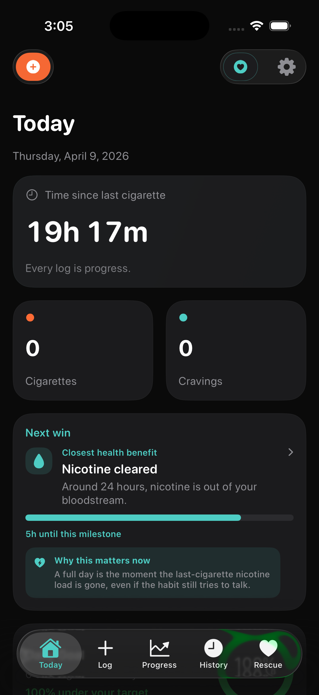
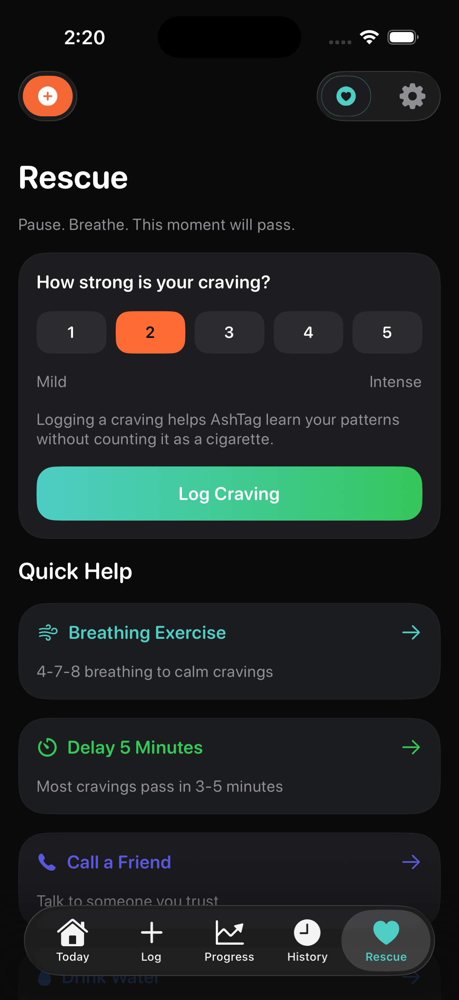
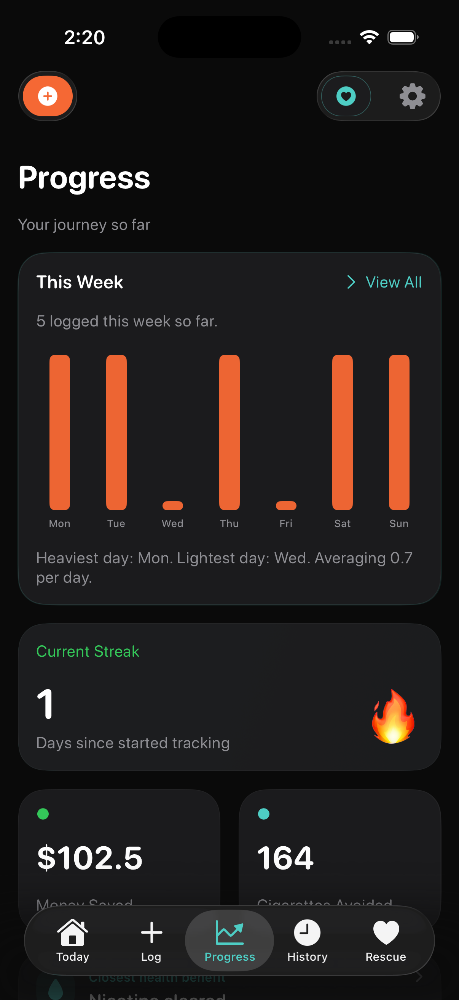
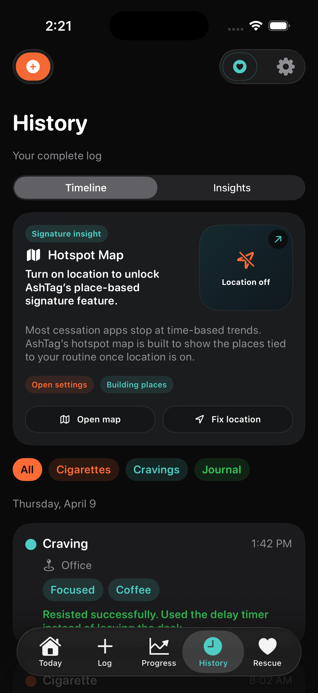
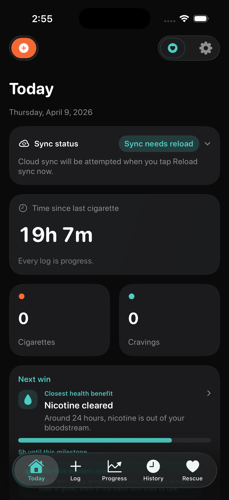

Log fast
Capture cigarettes and cravings in seconds without turning the moment into homework.
Track the quitting curve without getting shamed by it.
Fast cigarette logs, craving support, progress context, and optional sync for people who need the next minute to feel possible.

Log honestly, then keep moving.
Use the tool that fits the craving.
Today, Rescue, Progress, History, Hotspots, and Sync surfaces work together without turning every rough moment into a lecture.




Capture cigarettes and cravings in seconds without turning the moment into homework.
Use breathing, delay, walking, hydration, and reflection tools when pressure spikes.
Review history, hotspots, milestones, and progress when perspective is useful.
Use the app device-first, then opt into Cloud Sync or permissions only when wanted.
The product stance is simple: log the truth, use support quickly, and return later with enough context to make the next choice with a little more room.
Log what happened before the whole day gets defined by it.
Start a delay, breathe, or step away without digging through settings.
Optional hotspot context can make familiar triggers easier to spot.
Come back to progress and history when perspective helps more than pressure.
The app is built around small repeatable interactions: log quickly, reach for a rescue tool when needed, and review patterns when you have the bandwidth.
Track the cigarette or craving without being pushed into a long ritual.
Pick breathing, delay, hydration, walking, or reflection based on what the craving needs.
Hotspots, history, progress, and milestones are there when context is more helpful.
QuitGentle keeps the core experience available without an account and without requiring sensitive permissions. Optional Apple Health / HealthKit support is read-only heart-rate context, and Cloud Sync stays opt-in.
The core tracker works without sign-up.
Location, notifications, Health, and Motion & Fitness are user choices.
Export, import, delete, and reset tools live inside the app.
QuitGentle does not diagnose, prescribe, use CareKit, or replace medical support.
QuitGentle is for honest logs, practical rescue tools, and pattern awareness that does not make a difficult day feel like a character flaw.
It is not built to shame people into perfect streaks. It is not trying to sound like clinical treatment. It is not here to turn every tough day into failure.
QuitGentle helps people notice what is happening clearly enough to make the next decision with a little more room.
iPhone, iPad, Apple Watch, widgets, and Live Activity surfaces keep the right entry point close.
The primary experience for logging, support, history, and progress.
A roomier dashboard for reviewing patterns, settings, and longer context.
Quick support and fast wrist logging when the phone is not easiest.
Focused Home Screen and Lock Screen surfaces for glanceable context.
The delay flow can stay visible while a user rides out a craving.
Support, privacy, legal notes, and the structured support form are available now. The App Store download link will be added once the listing is live and publicly reachable.